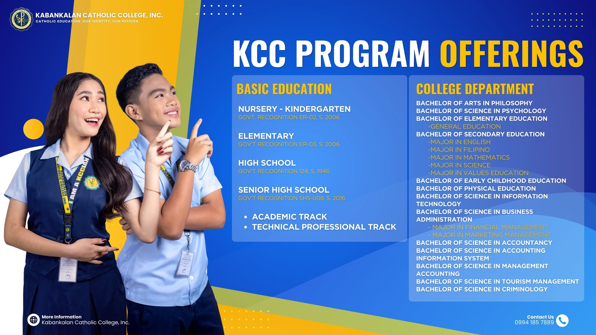
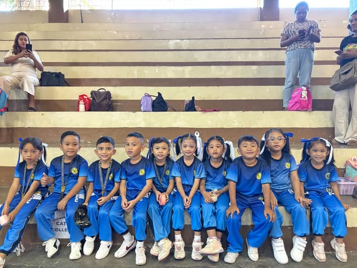
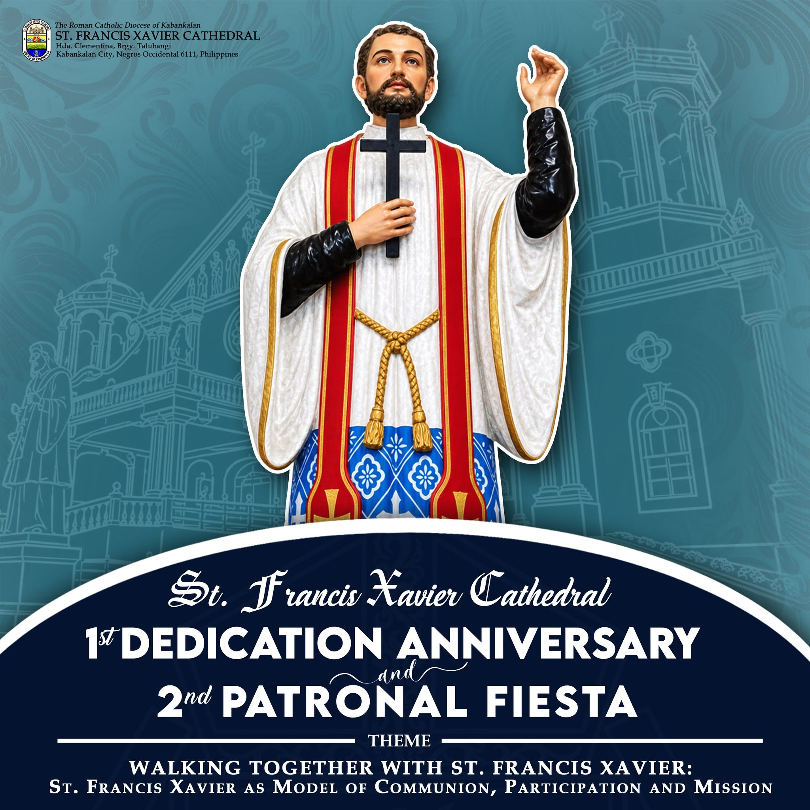
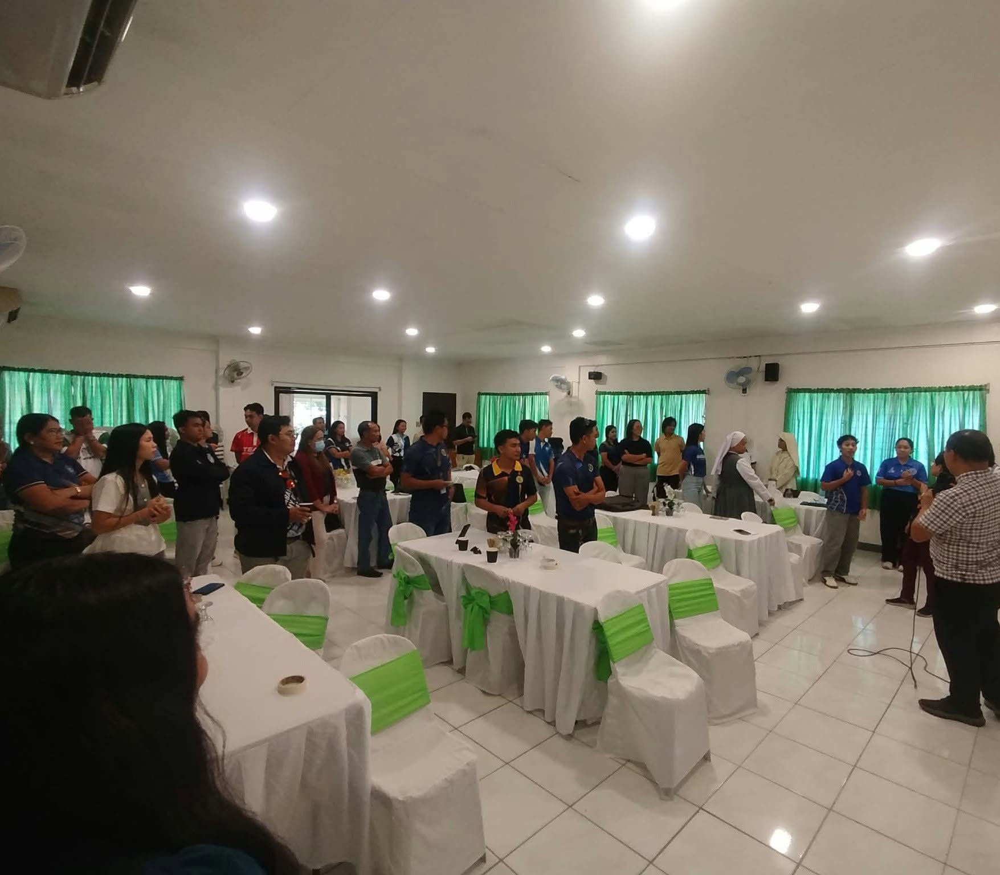

Kabankalan Catholic College, Inc.
Catholic Education: Our Identity, Our Mission
"Teach Ye All Nations" — Matthew 28:19

A Legacy of Faith and Education
Established in 1927, Kabankalan Catholic College, Inc. has been part of the educational community of Kabankalan City, upholding the importance of Catholic education, faith, and character formation.
KCC is committed to providing meaningful educational experiences that develop students academically, spiritually, and socially. Through its Catholic identity and educational mission, the institution encourages learners to become responsible individuals guided by Christian values, integrity, and service to others.
- Providing quality education rooted in Catholic faith and values.
- Strengthening students' spiritual growth, discipline, and moral character.
- Encouraging leadership, social responsibility, and meaningful community service.
Year Established
Educational Pillars
Years Since Establishment
One KCC Community
Why Choose KCC?
Kabankalan Catholic College provides an educational environment where academic learning and Catholic values go hand in hand. KCC encourages students to develop their abilities, strengthen their faith, and become responsible members of society.
Quality Education
Promoting academic growth, critical thinking, creativity, and the continuous pursuit of knowledge.
Faith Formation
Nurturing spiritual growth, Christian character, and values inspired by Catholic teachings.
Community Service
Developing a spirit of compassion, cooperation, leadership, and responsibility toward the community.
Education
Discover Learning Opportunities at KCC

Education
KCC
Academic Programs
Explore the academic programs of Kabankalan Catholic College and discover learning opportunities designed to develop students' knowledge, abilities, and future career goals.

Student Development
KCC
Learning and Development
KCC promotes a learning environment that supports intellectual development, creativity, collaboration, discipline, and the continuous improvement of every student.

Catholic Education
KCC
Values and Formation
Through Catholic education, KCC encourages students to practice faith, integrity, respect, compassion, and service in their daily lives.
Community
Building the KCC Community

Academic Excellence
Learning and AchievementKCC encourages students to develop their intellectual abilities, think critically, and pursue excellence in their academic journey.

Faith Formation
Faith and Christian ValuesThrough Catholic teachings and spiritual activities, KCC nurtures students' faith, moral character, and relationship with God.

Community Service
Service and ResponsibilityKCC inspires students to become compassionate and responsible individuals who actively contribute to the well-being of their communities.
Campus Life
Experience Life at KCC
CMAT Pinning 2025
The Rite of Pinning for the College of Management, Accountancy, and Technology celebrates an important milestone in the academic journey of students. It recognizes their dedication, growth, and preparation for their future professional responsibilities.
Explore School ActivitiesCriminology Reception Rites
The Criminology Reception Rites highlight the discipline, commitment, and determination of KCC Criminology students. This activity marks an important part of their formation as they prepare for the responsibilities of their chosen profession.
Explore School Activities